Source: 19 automatic CSV files with 7,143,147 positions. The two G7 video segments are shown separately.
Blue: Pedestrian; orange: E-bike; vermilion: Motor vehicle. All plots share the same coordinate limits and ticks, with equal scale in metres and the original world-coordinate origin. The dashed outline is the configured ROI. Click a plot to open the full-resolution image.
Trajectories are ordered by track ID and frame. Lines stop at missing frames or class changes. Every saved position is shown, and the common axes cover all 19 full scenes.
G1
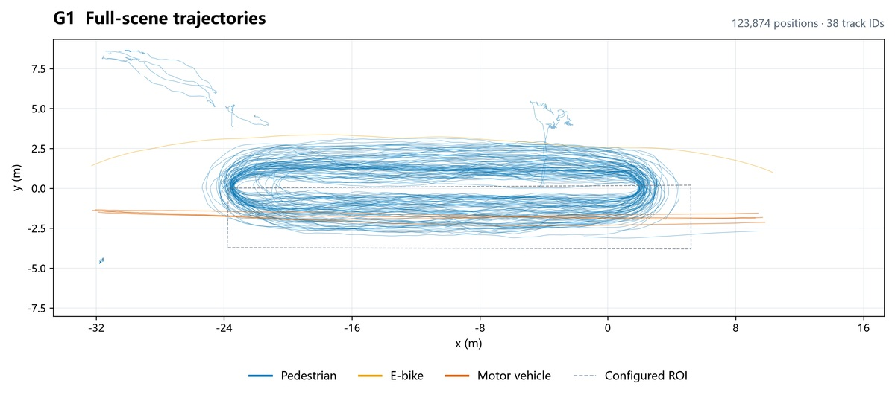
123,874 positions · 38 track IDs · Open full-resolution plot · CSV
G2
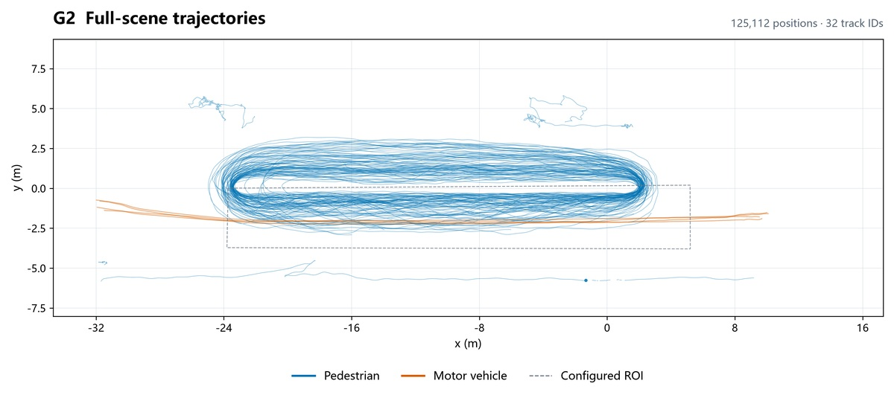
125,112 positions · 32 track IDs · Open full-resolution plot · CSV
G3
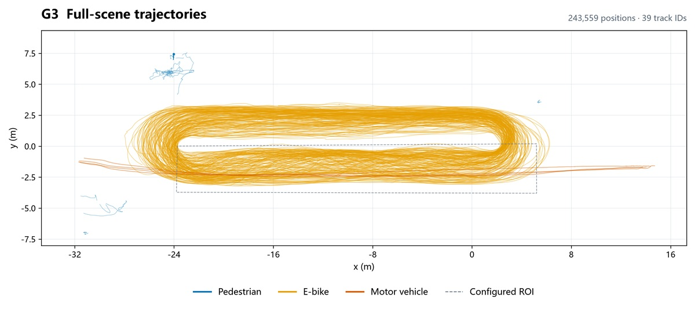
243,559 positions · 39 track IDs · Open full-resolution plot · CSV
G4
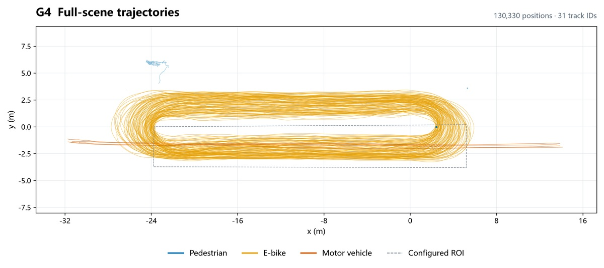
130,330 positions · 31 track IDs · Open full-resolution plot · CSV
G5
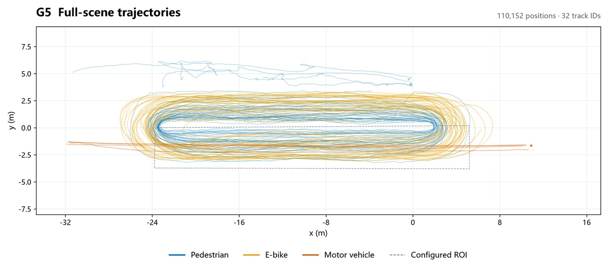
110,152 positions · 32 track IDs · Open full-resolution plot · CSV
G6
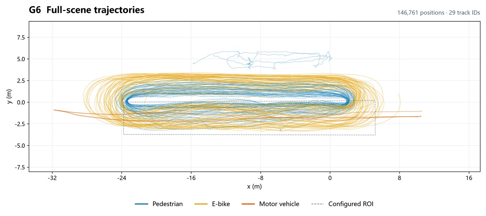
146,761 positions · 29 track IDs · Open full-resolution plot · CSV
G7-1
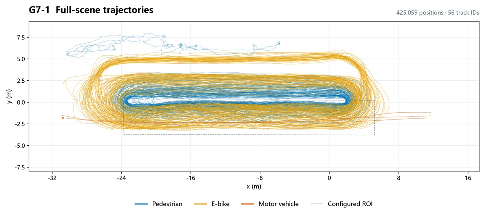
425,059 positions · 56 track IDs · Open full-resolution plot · CSV
G7-2
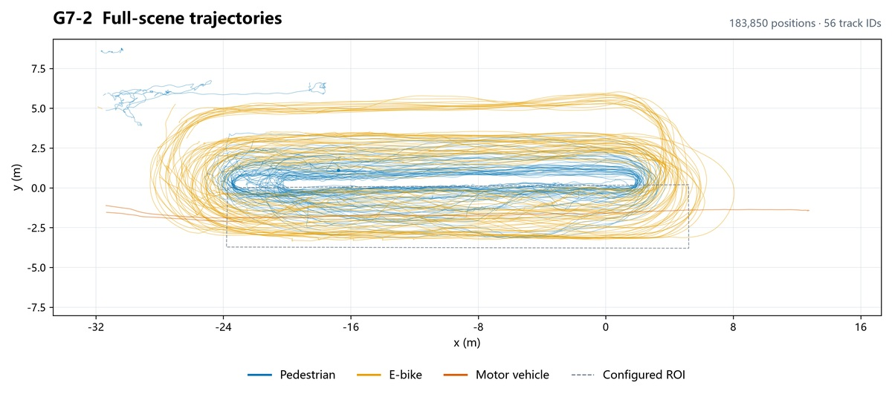
183,850 positions · 56 track IDs · Open full-resolution plot · CSV
G8
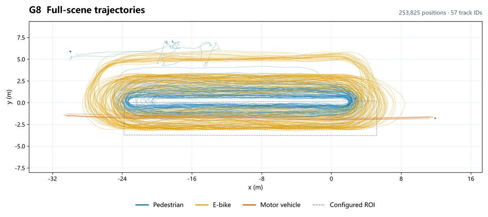
253,825 positions · 57 track IDs · Open full-resolution plot · CSV
G9
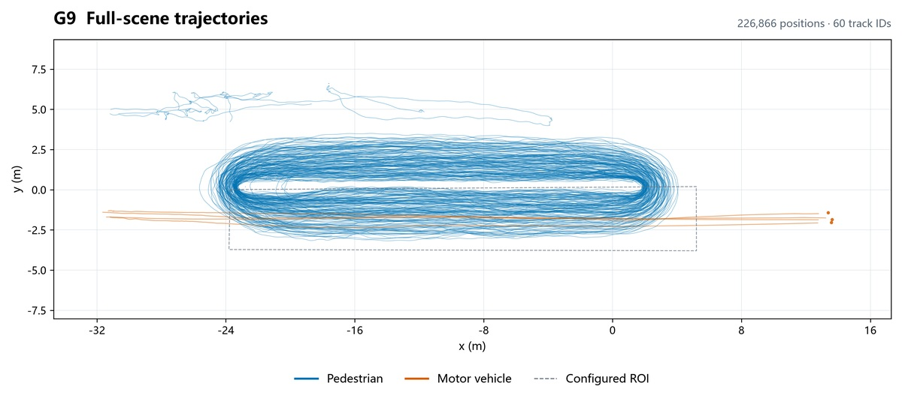
226,866 positions · 60 track IDs · Open full-resolution plot · CSV
G10
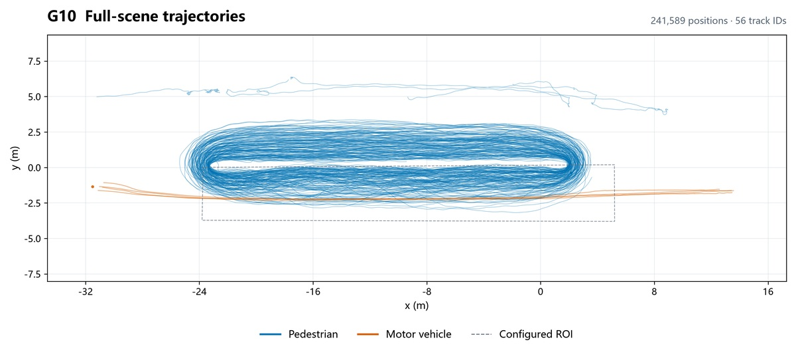
241,589 positions · 56 track IDs · Open full-resolution plot · CSV
G11
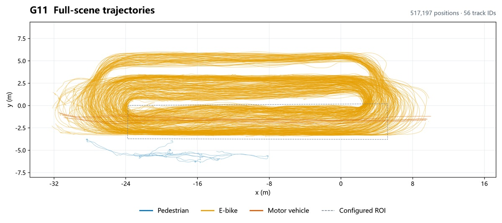
517,197 positions · 56 track IDs · Open full-resolution plot · CSV
G12
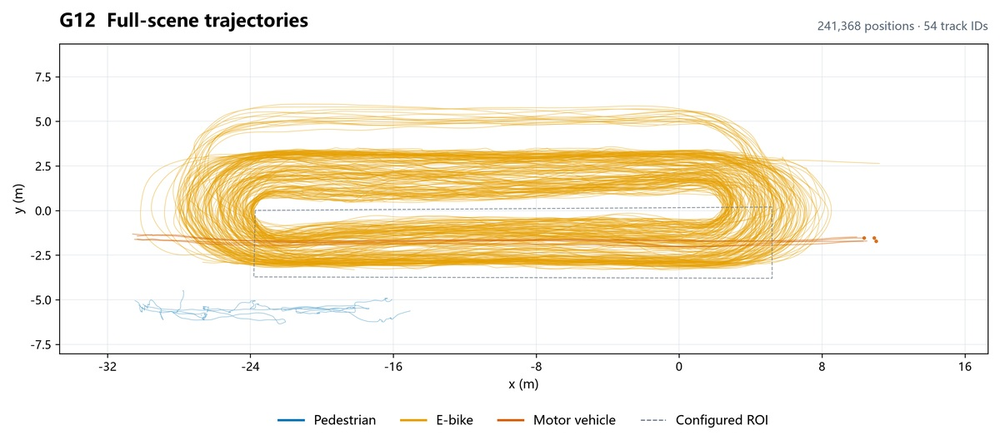
241,368 positions · 54 track IDs · Open full-resolution plot · CSV
G13
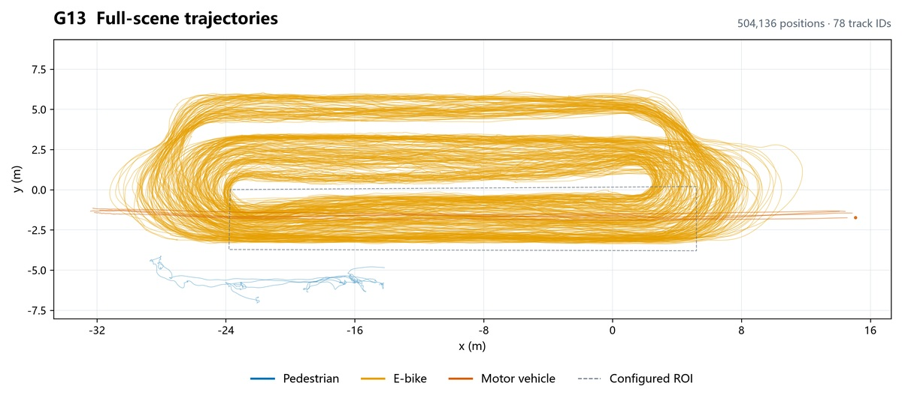
504,136 positions · 78 track IDs · Open full-resolution plot · CSV
G14
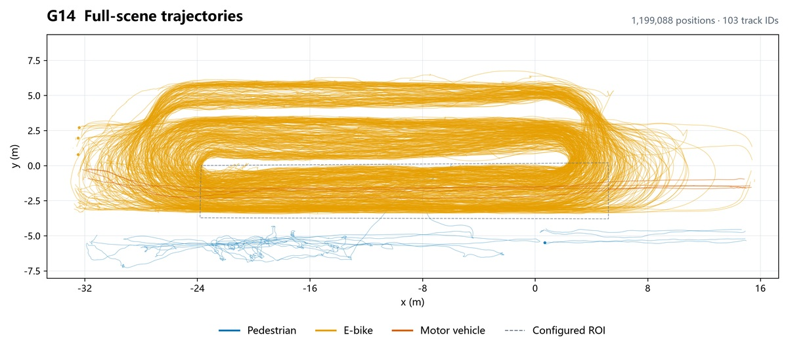
1,199,088 positions · 103 track IDs · Open full-resolution plot · CSV
G15
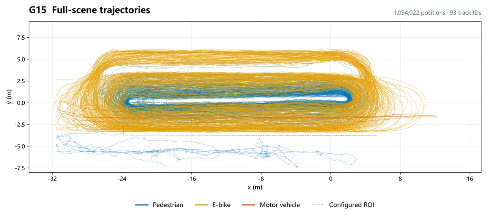
1,094,022 positions · 93 track IDs · Open full-resolution plot · CSV
G16
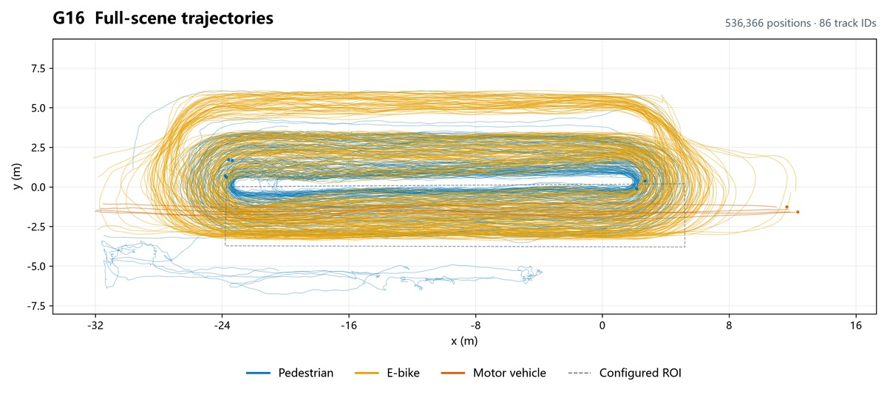
536,366 positions · 86 track IDs · Open full-resolution plot · CSV
G17
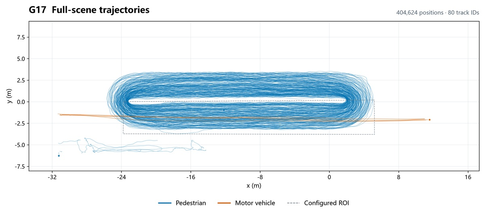
404,624 positions · 80 track IDs · Open full-resolution plot · CSV
G18
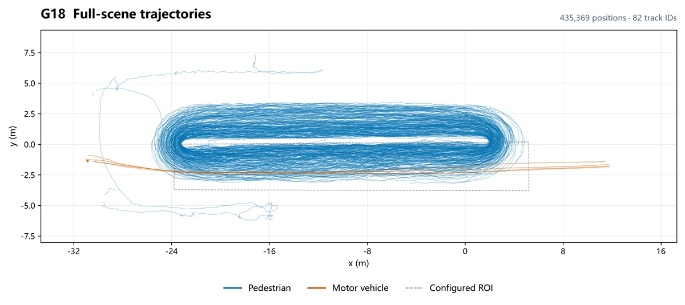
435,369 positions · 82 track IDs · Open full-resolution plot · CSV